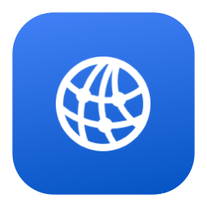

内置 SSH 终端
多个会话，一个窗口。
OUR MISSION · 我们的使命
通过端口转发，把本机网络带到远方。
让你更快开始，把时间留给创造。
原生 macOS · Apple Silicon · 开发中
少记几个端口，多写几行好代码。
交互示意，不会建立真实连接。实际使用需运行 App 并配置本机代理。
01 / 为你的工作方式而来
代码留在服务器，继续使用你熟悉的工具。
本机能用，远程却一直重试？让服务器上的 Codex 插件，通过 Mac 的本机代理连接网络。
def create(): idea = "something great" return idea # 把时间，留给创造。
帮我理解这个项目
一起从项目结构开始。
准备好，继续创造。在远程终端启动 Codex CLI。项目和计算留在服务器，网络请求交给 Mac 的本机代理。
会配置当前账号的终端及 Git 代理；已有终端需刷新环境。
~/research-project ❯ codex › 帮我梳理这个项目 代码在远方。 灵感，就在这里。
多个会话，一个窗口。
开启后，网络恢复时尝试重连。
检查连接，按需从备份恢复配置。
02 / 三步，轻松上手
读取已有 SSH 配置，
也可以手动添加一台。
点击连接，通过 SSH
接入 Mac 的本机代理。
按插件或 CLI 选择模式，
重载窗口或打开新终端。
使用前，需要可用的本机代理、SSH 连接，以及已安装并登录的 Codex。查看环境要求
03 / 好的连接，值得认真打磨

暂未开放下载
软件仍在完善中。当前网站仅展示产品功能与交互示意，暂不提供安装包。
Mac：Apple Silicon 芯片、macOS 13+，以及可用的 HTTP / Mixed 代理。纯 VPN / TUN 需另行提供 HTTP / Mixed 入口。
服务器：Linux / macOS、Python 3.8+，允许 SSH 远程端口转发。使用 VS Code 配置功能需安装标准 VS Code Server。
Codex 插件或 CLI 需自行安装并登录。Bridge 负责网络连接，不提供代理服务或 Codex 账号。
支持多服务器独立配置，沿用 SSH 密钥、密码和跳板机。多台 Mac 可为同一服务器账号提供网络出口，也可以共享暂停代理转发。
账号全局模式只配置当前服务器账号及支持标准代理的程序，不是整机 VPN；已有进程、容器和后台服务需要分别处理。
关闭窗口后，连接继续由菜单栏维护；退出 App 会结束本机终端和代理通道。Mac 睡眠或离线时，需要另一台已连接的 Mac 继续提供出口。
自动重连不会重放之前的请求。长期运行的终端任务建议使用 tmux 等工具。